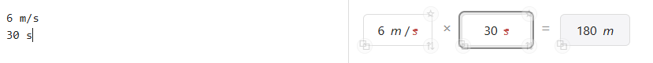
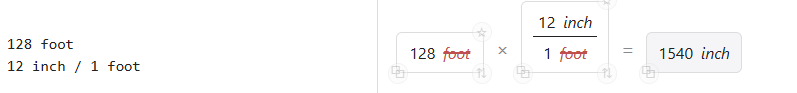
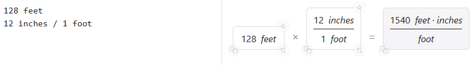
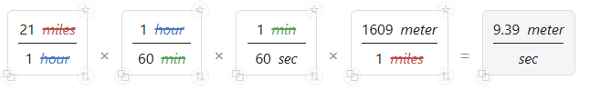

Follow along step by step in the calculator on the right.
This calculator helps you keep track of the units involved in your calculations to make the reasoning behind a calculation more visible. For our first calculation we're going to figure out how far a runner will go in 30 seconds, if they maintain a steady pace of 6 meters per second.
Type the speed in the "Source" pane in the calculator to the right. Type it as 6 m/s.
Notice that a card appears in the preview pane to the left of an equals sign, showing the speed you just typed. And a second card, also showing the speed shows up to the right of the equals sign.
Now type the time, 30 s on a new line in the source pane. You should now see a second card on the left of the equals sign, showing the time, and the card to the right of the equals should now show a distance, like this:

Notice how the "s" for "seconds" on the bottom of the fraction for the speed has a strikethrough, and so does the "s" for the time. Dividing a unit by itself "cancels" that unit, in this case leaving just the distance in "m" for "meters".
Now try to calculate how many inches there are in 128 feet, using the fact that there are 12 inches in a foot: 12 inch / 1 foot. If you put three dashes on a new line --- the calculator will start a new calculation line.
If you get error messages, check that you have a space between any numbers and the units that go with with them, and there must also be spaces around a division bar. A correct version of the calculation might look like this:

But make sure you type the unit names the same in each case! The calculator doesn't understand that "feet" and "foot" might mean the same thing:

See if you can build up this result calculation by typing in the Source pane -- notice how the units cancel in different colors so you can track them. The calculation shows converting the speed 21 miles per hour (21 miles/hour) to metric units of meters per second (9.39 meter/sec)
Check: Your result cards should look like this:

Now try some calculations on your own. Clear the calculator by deleting the Source lines, and set up new chains to convert. You can save your work by copying the share link with the button at the top right -- paste the link into a document or email to share it with someone else. Opening in a new tab opens the calculator without the tutorial text. You can control the number of digits displayed in answers using the "Sig Figs" number input.